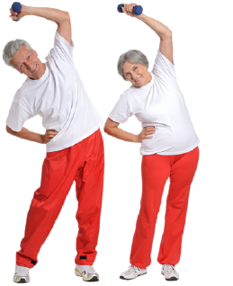

02. Sarcopenia
Ejercicios físicosLa OMS recomienda la actividad física regular. Individuos con más de 65 años deben practicar por lo menos 150 minutos de actividad física aeróbica de intensidad moderada durante la semana.
- Estudios con actividad física vienen mostrando resultados prometedores, tanto en la prevención como en el tratamiento de la sarcopenia.
- Los mejores resultados se obtienen con ejercicios de resistencia, o resistidos, que proporcionan una mejor resistencia física y en el tiempo de caminata.
- Los potenciales beneficios a largo plazo incluyen menor número de caídas, aumento de la movilidad y más independencia.
La intervención que ha demostrado beneficios exclusivos en la prevención y tratamiento de la sarcopenia es la actividad física regular supervisada.
